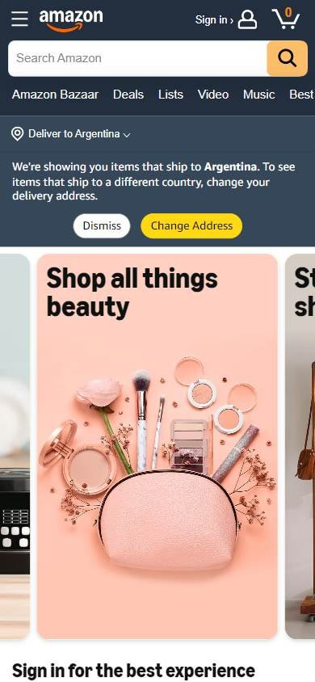
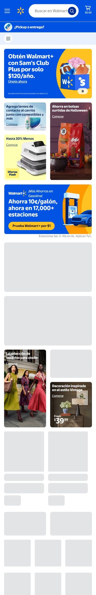

Tienda online que compite por buen precio
Los seleccionados
Los tres sitios más visitados de Estados Unidos, según estadísticas de tráfico.
En resumen: lo que hacen los líderes
La pantalla de inicio de cada uno



Estilo visual
Colores, imágenes, tipografía y cuánta información muestran.
Tu estilo visual debería…
- Interfaz en blanco y un color de marca; dejá que el color lo pongan las fotos de producto.
- Botones en forma de píldora y tipografía sin serifa en negrita para los títulos.
Lo que tienen en común: Interfaz neutra con fotos de producto como protagonistas. La paleta de la interfaz es acotada; el color viene de las fotos y de las tarjetas de ofertas.
La paleta de cada uno
Medida sobre la primera pantalla. Los colores de marca salen del header; el resto muestra cuánto espacio ocupa cada color.
Así lo resuelve cada uno
Ficha comparativa
| Aspecto | Amazon | Walmart | eBay |
|---|---|---|---|
| Paleta | Variada: cada tarjeta de otro color | Acotada: azul + amarillo y tonos cálidos en banners | Acotada: blanco + azul de botones; color en las fotos |
| Imágenes | Fotos de producto medianas, recortadas sobre color | Fotos de producto y ambientes grandes | Fotos de producto en círculos y una foto grande |
| Tipografía | Sin serifa, títulos en negrita | Sin serifa, títulos grandes en negrita | Sin serifa, peso medio |
| Densidad | Alta | Alta | Media, con aire |
| Botones | Amarillo en píldora | Píldoras con borde | Azul en píldora |
Header
La franja de arriba con el logo y los accesos.
Tu header debería…
- Logo a la izquierda, buscador muy ancho en el centro, cuenta y carrito a la derecha.
- Mostrá a dónde se entrega o si se puede retirar, junto al logo.
Lo que tienen en común: Logo a la izquierda, buscador muy ancho en el centro y cuenta con carrito a la derecha. Dos de tres usan el color de la marca de fondo; eBay se queda en blanco.
Así lo resuelve cada uno


Ficha comparativa
| Aspecto | Amazon | Walmart | eBay |
|---|---|---|---|
| Fondo | Negro | Azul de marca | Blanco |
| Logo | A la izquierda | Ícono amarillo, a la izquierda | Multicolor, a la izquierda |
| Lugar de envío visible | Sí («Deliver to…») | Sí («¿Pickup o entrega?») | No |
| A la derecha | Idioma, cuenta, pedidos y carrito | Cuenta y carrito con monto | Accesos chicos arriba, carrito |
| Pisos | 2 | 2 | 2 (franja de enlaces arriba) |
Buscador
La barra para buscar.
Tu buscador debería…
- Buscador que ocupe casi todo el ancho libre del header.
- Botón de búsqueda relleno en un color de acento (naranja, azul).
Lo que tienen en común: El buscador ocupa casi todo el ancho libre en los tres, con un botón de búsqueda de color de acento.
Así lo resuelve cada uno

Ficha comparativa
| Aspecto | Amazon | Walmart | eBay |
|---|---|---|---|
| TamañoIgual en todos | Muy ancho | Muy ancho | Muy ancho |
| Estilo | Blanco con selector «All» y lupa en cuadrado naranja | Blanco en píldora con lupa en círculo azul | Blanco con borde, selector de categoría y botón azul «Buscar» |
Menú y categorías
Cómo se organizan las secciones.
Tu menú y categorías debería…
- Botón «Departamentos» o «Todo» a la izquierda y accesos directos al lado.
Lo que tienen en común: Un acceso a todo el catálogo a la izquierda y una fila de accesos directos al lado.
Así lo resuelve cada uno


Ficha comparativa
| Aspecto | Amazon | Walmart | eBay |
|---|---|---|---|
| Formato | «All» con ícono de menú + accesos | «Departamentos» + «Servicios» + accesos | Fila de categorías en texto |
| Fondo | Franja gris oscura | Blanco | Blanco |
Primera pantalla
Lo primero que se ve debajo del header.
Tu primera pantalla debería…
- Banner promocional y, en la misma pantalla, categorías o productos con foto.
Lo que tienen en común: Las tres combinan un banner promocional con grillas de productos o categorías en la primera pantalla.
Así lo resuelve cada uno
Ficha comparativa
| Aspecto | Amazon | Walmart | eBay |
|---|---|---|---|
| Formato | Grilla de 5 tarjetas de color | Banner horizontal con márgenes + fila de ofertas flash | Banner con foto + franja de confianza + categorías en círculos |
| Precio visible | No en el banner | Sí, en «Ofertas flash» | No |
| Debajo | Grillas de categorías con fotos | Ofertas con precio y botón «Opciones» | Categorías en círculos con foto |